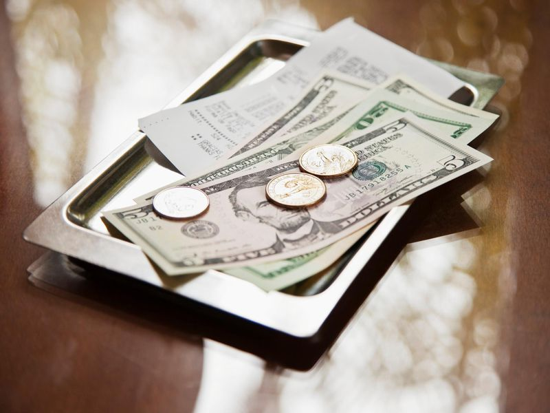

Quick Tips

Here you will find helpful tips for more quick mental calulations you can do easily. You will also
find resources for continuing your mental math journey and expanding your knowledge and strategies. The key is to practice
and use the strategies daily. Soon you will find that you do them even without thinking!
Read this article about how to pass an employment math test here: How to Pass an Employment Math Test
Are you ready to start practicing?
Click here to Play the Quizlet Game: Quizlet Game
Here you will find helpful resources such as books, websites, and Apps recommendations to support
and continue your math learning journey!
Books
Here is a link to some recommended mental math books for adult learners: Books
Links
Here is a link to some Apps recommended for adult learners: Apps
Many service workers are paid below minimum wages due to the practice of customers tipping their servers based on service quality. Businesses with workers relying on tips as their income include: restaurant servers, bar tenders, drivers, pet groomers, food delivery workers, hair stylists and hospitality workers (bell-hops, cleaning dept. room service).
The current tipping rate for quality service is 20%. This means for good service, a fair tip
for a $10 bill would be $2.
Here is a quick way to determine the tip on any bill:
1. Move decimal point of total on bill one place to the left. That new amount is 10%.
(For Example: my hair cut bill is $24.95. That is almost $25 so I round up to $25, and then move decimal
1 place to the left: $2.50).
2. $2.50 is only 10% of my bill. I want to give my stylist a 20% So, I quickly double
$2.50 in my head, making it now 20% which amounts to $5.
Let's say I wanted to give a 15% tip. Again, I would:
1. Round up total on bill to nearest dollar:
2. Move the decimal point one place to the left for 10%.
3. But this time, I need to half the 10% amount:
4. Combine the 10% and 5% to make 15%. 10% of $25 is $2.50. Half of $2.50 is $1.25. 15% = $3.75!
